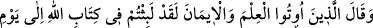
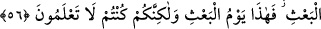

Allâh’a
hamdolsun.”
(ez-Zümer, 39/74), “Bu, Rahmân’ın
vaadettiğidir.
Peygamberler gerçekten doğru söylemişler!” (Yâsîn, 36/52) ve benzeri sözleri
söylemeleri neticesini verdi. Yalandan doğan inkâr ise kâfirlerin o gün: “Rabbimiz
Allah hakkı için biz ortak koşanlar olmadık.” (e-En‘âm, 6/23) demeleri, (kabirlerde)
bir saatten az kaldıklarına yemin etmeleri ve benzeri sözleri söylemeleri sonucunu
verdi.
Hâfız der ki:
Doğruluğa çalış çabala ki nefesinden güneş doğsun
Subh-ı kâzibin yüzü, yalancılığından dolayı karardı
Yâni fecr-i sâdıkın arkası güneş olduğu gibi doğruluğun sonu nurdu. Fecr-i kâzibin
arkası karanlık olduğu gibi yalanın sonu da zulmettir/karanlıktır.
56. Kendilerine ilim ve îman verilenler şöyle derler: Andolsun ki siz, Allâh’ın
yazısında (hükmedildiği gibi) yeniden dirilme gününe kadar kaldınız. İşte bugün
yeniden dirilme günüdür; fakat siz onu tanımıyordunuz.
Dünyâda “kendilerine” meleklerden ve insanlardan “ilim ve îman verilenler” onları
reddetmek ve yalanlarını inkâr etmek üzere “şöyle derler: Andolsun ki siz, Allâh’ın
yazısında” ümmü’l-kitâbdaki/levh-i mahfuzdaki ezelî takdirde, yâni Allâh’ın ilim ve
kazâsında “(hükmedildiği gibi) yeniden dirilme gününe kadar kaldınız.” Bu ise az bir
zaman değil uzun bir müddet ve uzak bir vakittir. Bir hadîste şöyle buyrulmuştur:
“Dünyânın yok olması ile tekrar diriltilme arasında kırk vardır.”[54] Bu kırkın saat,
gün veya yıl olması muhtemeldir. Âşikâr olan ise bu müddetin kırk yıl veya kırk bin
sene olmasıdır.
Sonra kâfirleri yeniden diriltmeyi (ba‘s) inkâr ettikleri için onları azarlayarak ba‘sin
meydana geldiğini kendilerine şöyle haber verdiler:
Siz yeniden dirilmeyi inkâr edenler idiyseniz “İşte bugün” sizin inkâr ettiğiniz ve
dünyâda size vaadedilen “yeniden dirilme günüdür;” Yâni sizin inkârlarınızın bâtıl/boş
olduğu açıkça belli olmuştur. “Fakat siz” aşırı cehâlet ve düşüncesizlikten dolayı
dünyâda “onu tanımıyordunuz.” Onun hak ve olacak olduğunu bilmiyor ve alay ederek
onu acele istiyordunuz.